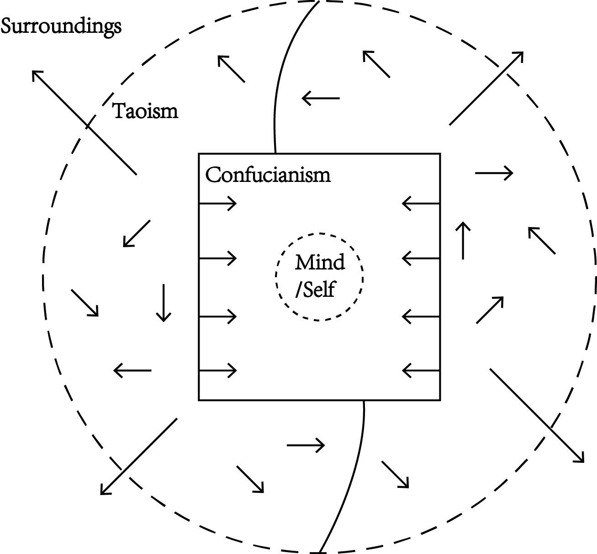

Summary of the week
During this week we started with thinking about long term project management tools and we decided to use a weblog of our progress. Then we individually investigated different areas, trying to make sense of the comments received in the first tutorial. At the end of the week we met Jess and Yury for tutorial.
Project Management
We decided to kickoff this weblog where we can put media content, minutes of relevant meetings and overall keep a log of our activities. This is relevant for us in the first place, but we think it can be useful for our tutors also when they want to check where we are at. Our goal is to have a week updated every Sunday night. We decided to use Github Pages to host our website and Bootstrap as a template for a webpage. We decided to script this blog as we all have a nerdy soul deeply buried in ourselves.
Philosophical Studies
China
figure1
©nakia
Drawings in the history

Wabi Sabi ideas
We've got a Japanese teammate, he argued with me that foriegners should never try to understand or to explain Wabi Sabi ideas. I agree with all my heart and would show my respects towards Japanese culture by all means. But for future delivering, I'm trying to list some ideas that could be related with Wabi Sabi.
Body and Object
Heidegger
Merleau Ponty
Lacan
Speculative Realism
In Speculative Realism, they work to overturn the idea inspired by the tradition of Immanuel Kant where human beings are privileged in the relationship between themselves and objects.
Correlationism consists in disqualifying the claim that it is possible to consider the realms of subjectivity and objectivity independently of one another. Not only does it become necessary to insist that we never grasp an object 'in itself, in isolation from its relation to the subject, but it also becomes necessary to maintain that we can never grasp a subject that would not always already be related to an object.
Quentin Meillassoux, After Finitude
For correlationism as well as idealism, the object is not a mysterious residue lying behind its manifestation to humans. If I claim to think of an object beyond thought, then I am thinking it, and thereby turn it into a correlate of thought in spite of myself. Hence the object is nothing more than its accessibility to humans.
Bryant, Levi; Harman, Graham; Srnicek, Nick (2011). The Speculative Turn: Continental Materialism and Realism.
Object-Oriented Ontology
jais;dflasj
Japanese vs Euro-American Robotics
We visited the Robot exhibit at the science museum and that made us reflect on why Japanese robotics is so different from let's say European/American robotics. Below are two of the most impressive: Kodomoroid and Asimo. They are meant to be assistive/companion robots and they are in all the aspects human-like, or at least that is what the engineers had in mind.
European/American projects also included humanoid walking humans, such as ICub. However, there were also robotic colleagues of a non-human shape, such YuMi and Amico.
This Article helped us better understanding the differences of the two cultures and how they emerge in the way robots are designed. On Japanese culture Naho Kitano says:
The sun, the moon, mountains and trees each have their own spirits, or gods. Each god is given a name, has characteristics, and is believed to have control over natural and human phenomena. This thought has continued to be believed and influences the Japanese relationship with nature and spiritual existence. This belief later expanded to include artificial objects, so that spirits are thought to exist in all the articles and utensils of daily use, and it is believed that these sprits of daily-use tools are in harmony with human beings.
On America Culture Rui Umezawa says:
In order to understand fully religion’s influence on the West’s attitude toward robotics, we also must remember that Judeo-Christian monotheism also adheres to the doctrine that only God can give life, a popular interpretation of Genesis in which there is only God in the beginning and all living things are His creations. Exodus also decrees that idolatry is a sin. Thus, any human who breathes life into an inanimate object is assuming the role of God and thereby becoming a false idol. Such a blasphemer deserves punishment, and in the conventions of science fiction, this usually comes in the form of betrayal by the robots. From the 1920 work R.U.R. (Rossum’s Universal Robots) by Czech playwright Karel Čapek - who is credited with coining the term “robot” – through The Terminator movies to Battlestar Galactica, such human vanity is constantly met by rebellion by its creation.
Relevant articles/books we scanned through:
. Love and Sex with Robots book on emotional relationships with robots. There is even a conference in that realm, called LSR. Curious weird stuff
. Robot Ethics article on human-robot relationship. How much harm would you be willing to do to a machine?
. Robots as caregivers article
. Naho Kitano paper on Animism, Rinri, Modernization: the base of Japanese robotics. Awesome cultural reference
Body Culture for the West (updates)
. Umberto Galimberti lecture on body concept in western phylosophy. It covers pretty much all the relevant currents along two thousand years. Too bad its only in Italian, sorry about that
. Patrizia Marti inaugural lecture on Embodiment in Interaction Design. Interesting references to Merlau Ponti's phenomenology.
Tutorial (Yuri+Jess)
notes